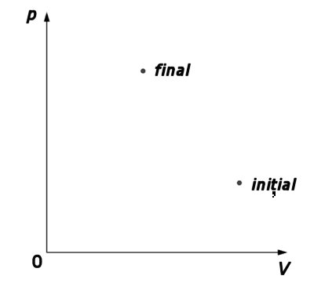
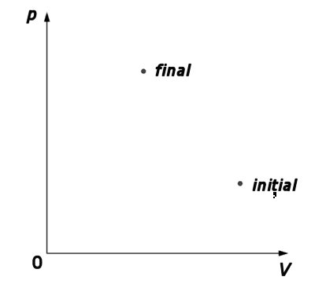
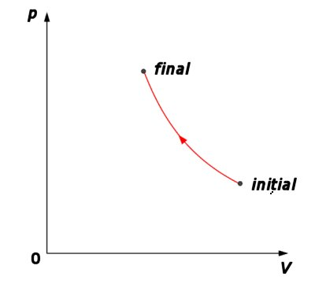
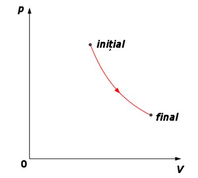

Provocarea 1-1
Provocarea 1-1
Cum ai reprezenta, în coordonate p−V, comprimarea foarte rapidă a unui gaz într−un cilindru izolat adiabatic, până la jumătatea volumului său iniţial?
Elemente de termodinamică. |
Al doilea principiu al termodinamicii |
H-1. |
Procese reversibile şi ireversibile |
Provocarea 1-1
Cum ai reprezenta, în coordonate p−V, comprimarea foarte rapidă a unui gaz într−un cilindru izolat adiabatic, până la jumătatea volumului său iniţial?
În timpul unei comprimări foarte rapide, presiunea şi temperatura gazului nu sunt bine definite: în imediata vecinătate a pistonului există un strat de gaz la presiune şi temperatură mai mari decât în restul incintei! Este nevoie de timp pentru uniformizarea presiunii şi temperaturii.
Nu sunt definite decât stările iniţială şi finală (acestea sunt stări de echilibru termodinamic). Nici una dintre stările intermediare nu poate fi reprezentată, deoarece nu sunt stări de echilibru (figura 1−1).
 

Figura 1-1. Reprezentarea unei compresii adiabatice cu stări intermediare de neechilibru.
Provocarea 1-2
Cum ai reprezenta, în coordonate p−V, comprimarea foarte lentă a unui gaz într−un cilindru izolat adiabatic, până la jumătate din volumul său iniţial, fără frecări între cilindru şi piston?
Cu cât este mai lentă comprimarea, cu atât sunt mai mici variaţiile de la un loc la altul ale parametrilor termodinamici ai gazului.În tot timpul comprimării, gazul trece prin stări care sunt aproape de echilibru termodinamic. Efectuând comprimarea şi mai lent, vor fi şi mai mici diferenţele faţă de stări de echilibru. Transformarea poate fi reprezentată grafic ca o succesiune continuă de stări de echilibru − o linie continuă în coordonate p−V (figura 1−2).

Figura 1-2. Compresie adiabatică lentă a unui gaz.
Inversând sensul de deplasare foarte lentă a pistonului, gazul va trece, în sens invers, prin aceleaşi stări de intermediare de echilibru (figura 1−3).

Figura 1-3. Inversarea compresiei adiabatice.
 Numim transformare reversibilă transformarea care,
printr−o variaţie infimă în mediul înconjurător, poate fi inversată şi se desfăşoară trecând prin aceleaşi stări
intermediare de echilibru.
Numim transformare reversibilă transformarea care,
printr−o variaţie infimă în mediul înconjurător, poate fi inversată şi se desfăşoară trecând prin aceleaşi stări
intermediare de echilibru.
Inversând sensul de deplasare al pistonului şi deplasându−l foarte rapid, presiunea gazului în imediata vecinătate a pistonului va fi mai mică decât în cazul destinderii lente. Lucrul mecanic schimbat de gaz cu mediul şi, în consecinţă, variaţia energiei interne şi starea finală vor fi diferite de cele de la care a început comprimarea! O transformare adiabatică rapidă este ireversibilă.